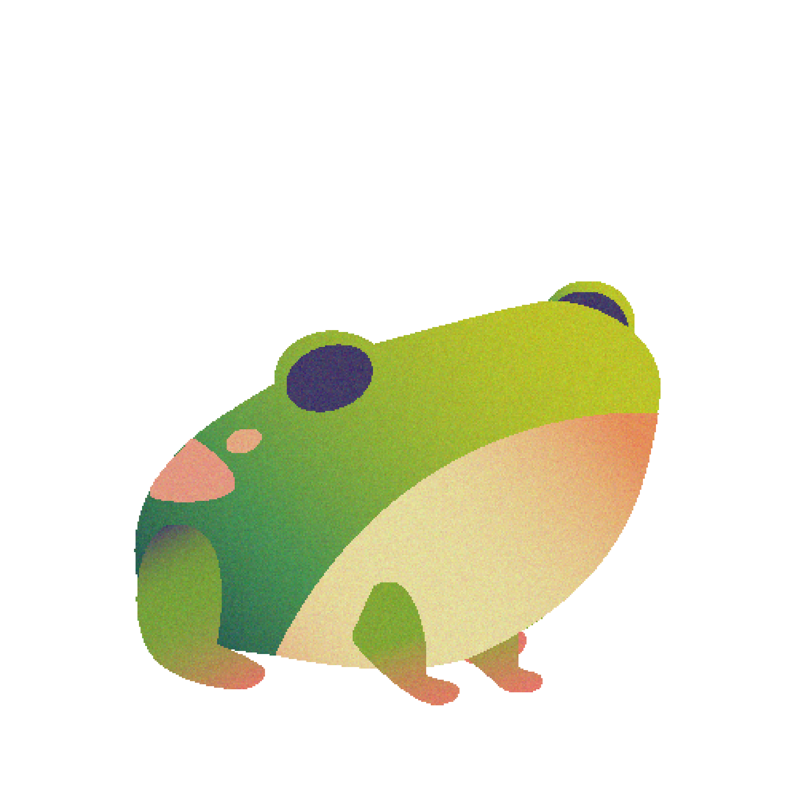
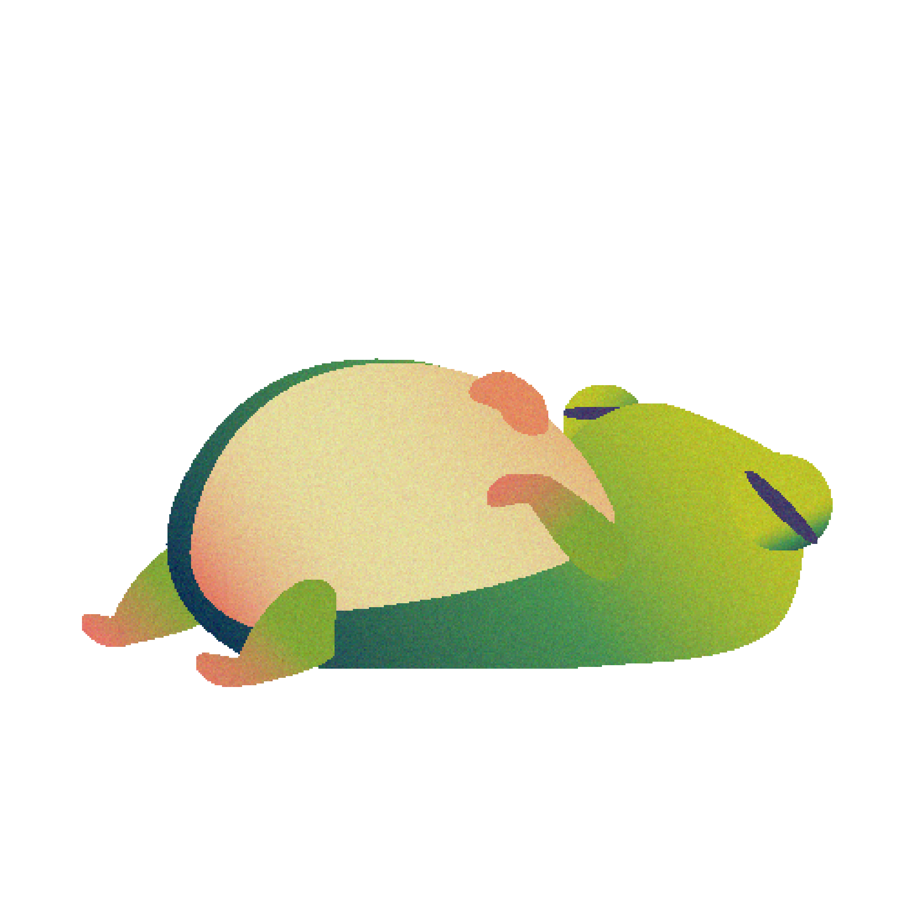

FEED THE FROG ✦
MOVE TO THE EDGES TO EXPLORE THE POND.
HOVER OVER MOSQUITOES. AVOID LADYBUGS!
FIND THE MOSQUITOES!
0 / 3
♥ ♥ ♥

FROG IS FULL!
MOVE TO THE EDGES TO EXPLORE ↔ ↕

MOVE TO THE EDGES TO EXPLORE THE POND.
HOVER OVER MOSQUITOES. AVOID LADYBUGS!
FIND THE MOSQUITOES!
0 / 3
♥ ♥ ♥

MOVE TO THE EDGES TO EXPLORE ↔ ↕